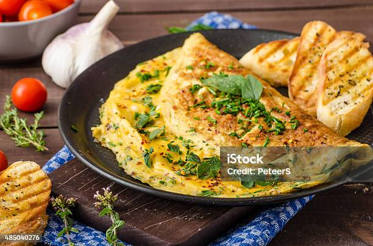

Omelette

Description
A classic omelette is a quick and versatile dish perfect for breakfast, brunch, or even a light dinner. It's fluffy, savory, and can be filled with your favorite vegetables, cheese, or meats. This simple recipe provides the base for a perfectly cooked omelette, ready to be customized to your taste.
Ingredients
- 2-3 large eggs
- Salt and black pepper to taste
- 1-2 tablespoons of milk or water (optional, for fluffier eggs)
- 1 tablespoon of butter or oil
- Fillings of choice (e.g., shredded cheese, chopped bell peppers, spinach, mushrooms, diced tomatoes, or cooked ham)
Steps
- Crack the eggs into a bowl and whisk them thoroughly until well blended. Add a pinch of salt, black pepper, and the milk or water if using. Whisk again to incorporate.
- Heat a non-stick skillet over medium heat and add the butter or oil. Swirl to coat the pan evenly.
- Pour the egg mixture into the pan, tilting it slightly to spread the eggs out evenly. Let it cook undisturbed for 1-2 minutes until the edges start to set.
- Using a spatula, gently lift the edges and tilt the pan to allow any uncooked egg to flow to the edges.
- Once the omelette is almost set but still slightly runny on top, add your desired fillings evenly over one half of the omelette.
- Fold the omelette in half using the spatula and cook for an additional 30 seconds to 1 minute until the cheese is melted and the eggs are fully cooked.
- Slide the omelette onto a plate and serve immediately.